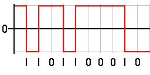

Le codage NRZI, Non Return to Zero Inverted en anglais, est une variante du codage Non Return to Zero (NRZ).
Le NRZI contrairement au NRZ crée une transition d'état si le bit est 1, et reste à l'état précédent si le bit est 0. Le codage est à deux états. Il n'existe pas d'état intermédiaire.
0 -> pas de changement de tension
1-> inversion de la tension

Facile à mettre en œuvre, bonne utilisation de la bande passante.
Inconvenients
Pas de transition créée lors d'une longue séquence de 0, donc synchronisation difficile, voire impossible. On préférera donc plutôt la méthode de codage Manchester.